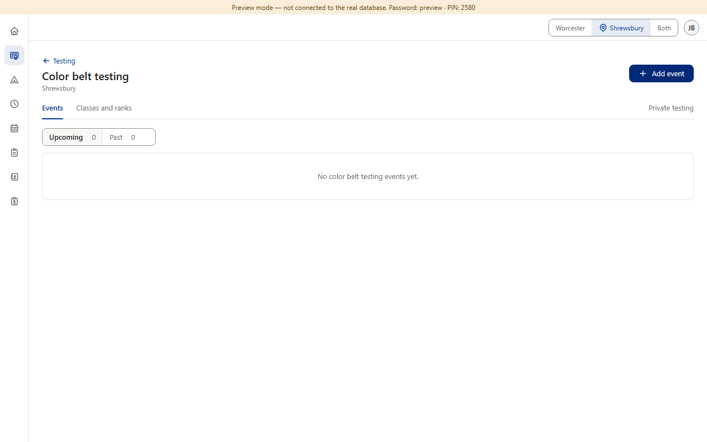
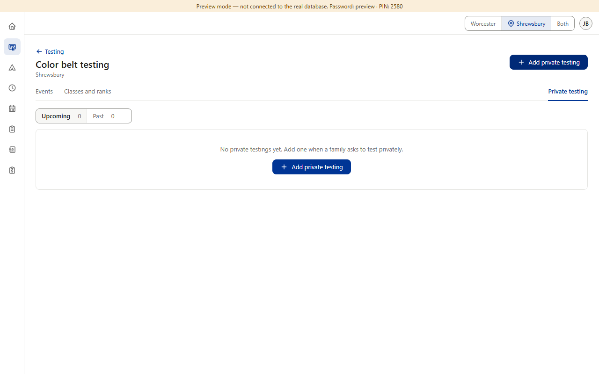
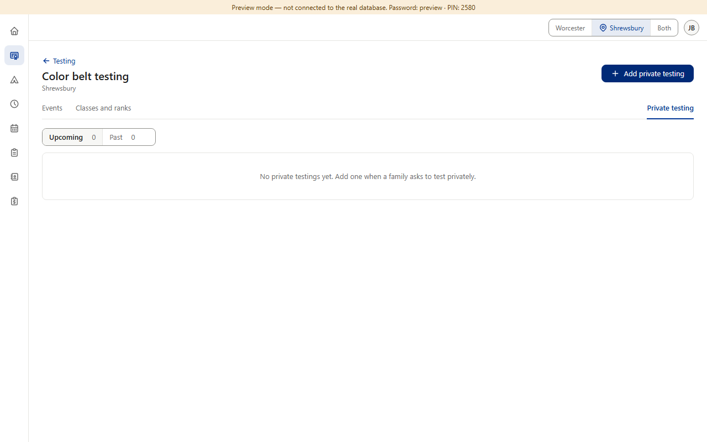
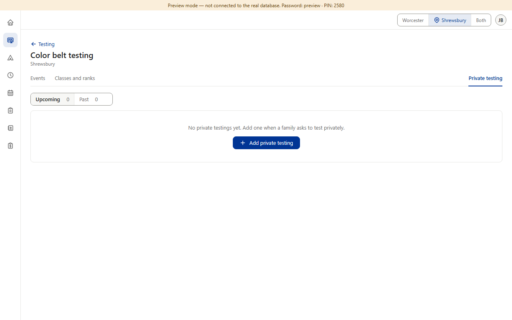

Approved in each section — but the rulebook says otherwise. §8 says an empty list shows one line + one action, and §1.1 says that action replaces the page header's button (never the same button twice). In practice every section shows the line only and keeps the header's button — each approved on its own (Classes and ranks v0.53, Star v0.92, Schedule v0.238 “Add button stays in the page header (same as Testing)”, Camps). Color Belt's Private testing does both: its box has a second blue “Add private testing” while the header still has one (drawn and approved in v0.403, though it breaks §1.1). (Preview screenshots at PC size, Shrewsbury · fake data)



